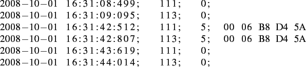

« Collecting spatial position data | Contents | Antenna adressing »
Data File Format
The data files are simple text files, where each line denotes an event registered by an antenna in the system. Every day the data file is closed saved, and a new data file is created automatically by the system. Basically there are to types of events.
The system output for first type is shown in figure ![[*]](file:/opt/local/share/lib/latex2html/icons/crossref.png) on page . It shows the line of text written to the data file when the RFID has been identified by an antenna. The RFID is a unique, ten character wide, alphanumeric value.
on page . It shows the line of text written to the data file when the RFID has been identified by an antenna. The RFID is a unique, ten character wide, alphanumeric value.
Figure:
Typical dataset in a data file with and RFID identification
|
|
If an RFID enters or leaves the coverage area, the second event type occurs. The ouput is shown in figure on page .
Figure:
Typical dataset in a data file without an RFID identification
|
|
The following lines show the data written to the data file by the system, when a mouse passes the two antennas attached to a box. The events taking place when each of these lines is written to the data file is explained in the following list. The list numbers match the line numbers of the data file fragment.

- The RFID enters coverage area of the antenna with address |111|.
- The RFID enters coverage area of the antenna with address |113|.
- The RFID is identified as |00 06 B8 D4 5A| at antenna with address |111|.
- The RFID is identified as |00 06 B8 D4 5A| at antenna with address |113|.
- The RFID leaves coverage area of the antenna with address |111|.
- The RFID leaves coverage area of the antenna with address |113|.
Depending on the event type, the value of the packet size is either a |0| for events without an identification value (RFID), or a |5| if the RFID has been identified. For the data processing (see section on page ) only the datasets with an RFID identification are taken into account.


Next: Antenna adressing
Up: Collecting spatial position data
Previous: Collecting spatial position data
Contents
rleuthold@access.ch